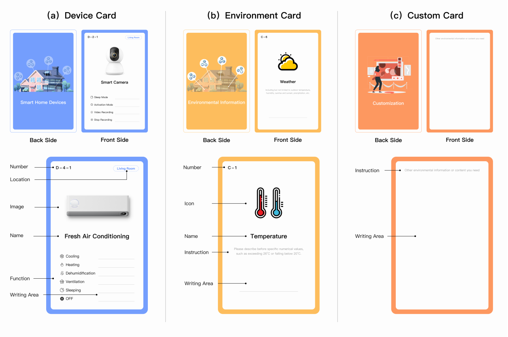
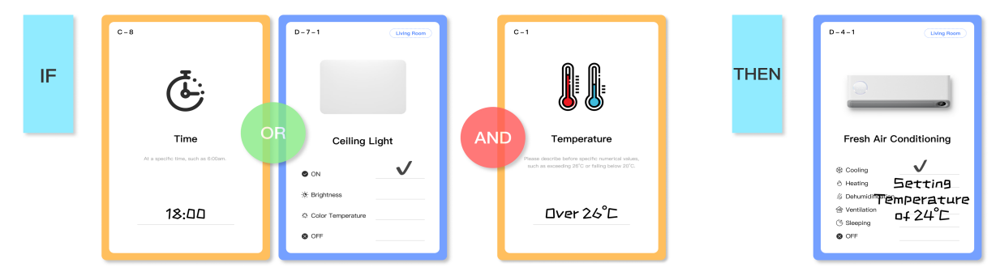
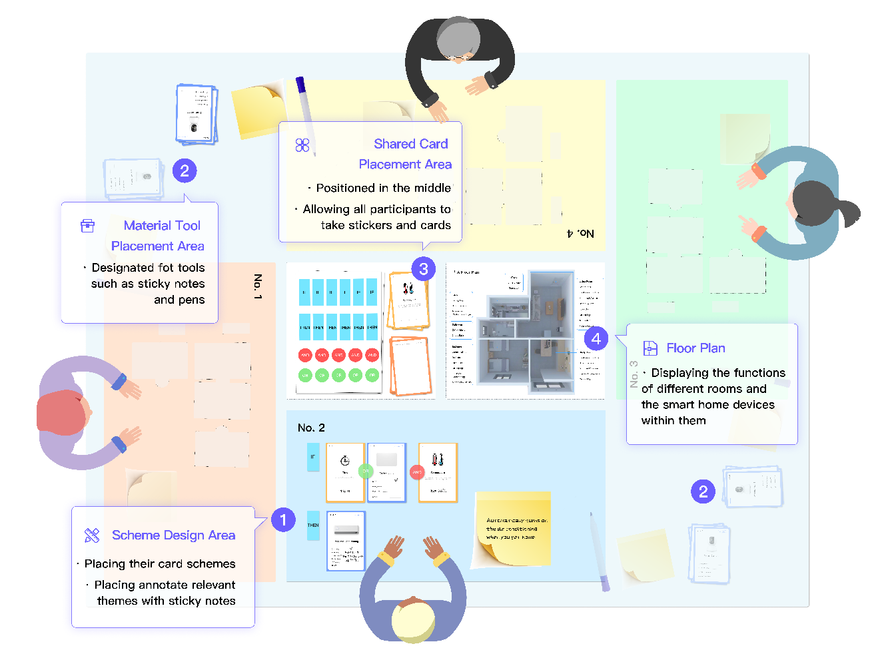
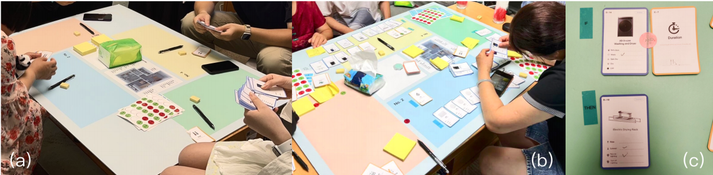

2025 / RtD
[RtD] Who Holds the Control? Uncovering Power in Smart Homes
Smart home technologies often promise empowerment. But in shared households, that promise can come undone. As automation routines get embedded into domestic life, they risk consolidating control in the hands of the most technically confident—often unintentionally. This project asks what it means to design automation together, when not everyone has equal footing.
We designed and ran five workshops in a fully equipped smart home living lab, inviting 20 participants with diverse ages, roles, and levels of experience to build TAP schemes using cards, logic stickers, and a shared board. The toolkit was designed to be structurally parallel to existing automation paradigms while making rules and resources more perceptible and shareable.



As participants drafted, discarded, redrafted rules, clear patterns emerged. Some favored central authority—setting routines that applied to everyone, whether they agreed or not. Others introduced consent prompts, shared toggles. These tangible traces—cards in motion—revealed how power and marginalization shape automation. The design tool became a lens into hidden household dynamics, showing how technical interfaces can unintentionally entrench inequality.

For designers and researchers, this reframes TAP systems: they aren’t neutral tools—they’re sites where empowerment or exclusion get constructed. The insight: attention to contestability, transparency, and material participation should guide design, especially in shared contexts.
This work doesn’t offer a final solution. Instead, it surfaces a question: When automation is communal, who really holds control?
This project has been published at CHI 2024. Read it here
Xiao Xue, Xinyang Li, Boyang Jia, Jiachen Du, Xinyi Fu